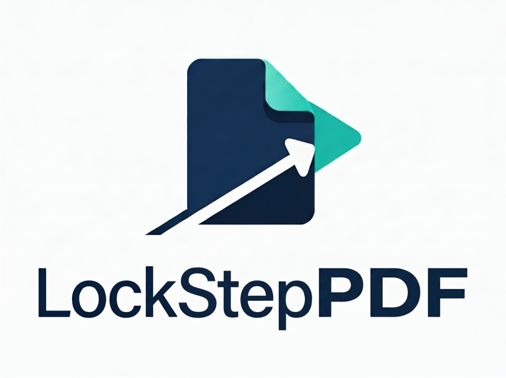
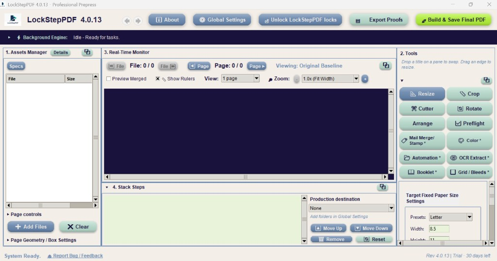

Build it by hand
Load the PDFs, fix the pages, stack the steps, and watch the page. Save the file where you want it. A copy can also land in each production folder named on the recipe.

Subscription
LockStep Tools · LockStepPDF
LockStepPDF is one job, built as a recipe. You load the PDFs, fix the pages that need it, stack the prepress steps, watch the result, and either save the file or let a hot folder run that same recipe.
How the tools belong together
Every later tool reads the files loaded in Assets. Page edits become one line. Prepress steps stack under that. A hot folder runs the same list.
Load the PDFs, fix the pages, stack the steps, and watch the page. Save the file where you want it. A copy can also land in each production folder named on the recipe.
Three hot folders. Each has an input, an output, and a saved recipe. One watcher runs every pipeline that is filled in. Preflight can sort the job by the result.
The job
Assets is the job. Every later tool reads the files loaded there.
The pages
Page controls change chosen pages inside those files. When the edits are right, Add to recipe stores them as one Page setup line. The recipe then applies that setup to the files that are loaded when it runs.
The stack
Applied Steps is the recipe. Resize, Crop, Bleed, Grid, Booklet, Cutter, Rotate, Color, and Mail Merge each add a line. Click a line to reopen that tool. Add appends a step. Overwrite replaces the selected one. Order matters: grow the bleed before you impose, convert color before you preflight, impose before you add cutter marks.
The view
The Real-Time Monitor shows the current page, with rulers in inches, millimetres, or points. Grid, Booklet, Crop, Resize, Bleed, and Mail Merge update that view as you change the fields.
The check
Preflight reads the file against a press profile. From the report you can jump into the tool that fixes the problem, starting with Color. Reading the report does not need a paid license. Export to JSON or PDF, and that jump, are Pro.
Unattended
Automation is the same recipe, unattended. Three hot folders each have an input, an output, and a saved recipe. Preflight can run with those jobs and sort them by the result.
The copies
Production destinations are extra folders named on the recipe. The file you save stays where you put it, and a copy also lands in each chosen folder.
These act on the pages you highlight, including pages in more than one file. They do not change the original file on disk until you save.
Pages
Each page shows its size. Color pages are labeled Color, Pagemix, or Colormix. Select every page, fronts, backs, one size, or every page that matches a set of properties. Drag pages into another PDF. Undo the move. Clear the list and the recipe stays.
Boxes
Leave the PDF boxes as they were, set the CropBox to the TrimBox so a viewer hides the bleed, or clip the page to the trim and drop the extra margin.
Color
Open Color for the highlight only, then keep that choice as a page-level step.
Crop
Step each edge in or out. The monitor follows the crop.
Bleed
Add bleed to the pages that need it, without imposing the whole job yet.
Resize
Place the page from a 3 by 3 anchor, with horizontal and vertical offsets. The artwork keeps its size unless you choose to stretch it.
Rotate
Turn a page 90, 180, or 270 degrees. A quarter turn swaps width and height. Fronts and backs can turn separately.
Pages
Insert a blank page, or remove a highlighted page from the working file. Blank pages are how a duplex or booklet job gets an empty back.
Recipe
One recipe line that carries those page edits, so the next run starts from the same page list.
Order
The page-order window for the loaded PDFs. Reorder, rotate, and recolor, then write that order back. Each PDF stays its own file. Join and Split live here, under output page order.
Output
Combine the loaded PDFs into one file. Name it from the first file, or from the date and time.
Output
Write each page out as its own PDF.
Each of these adds a line. Add appends a step. Overwrite replaces the selected one. Click a line to reopen that tool.
Fit
Fit each page onto a target sheet: Letter, Legal, Tabloid, A4, or a size you save. Use it when the incoming trim is wrong, before you impose. Landscape is a checkbox on the tool, not a second preset.
Margin
Take margin off the top, bottom, left, and right, in equal or unequal amounts. A step size and arrows move one edge at a time. Amounts use the current unit.
Bleed
Use this when the artwork has no bleed. Quick grow scales the page. Edge extend mirrors or stretches the outer edge into the new margin. The grown page keeps a TrimBox, so Grid and Booklet can pack on the finished size afterward.
Trim
For art that already includes bleed. Grid, Booklet, and the marks step by the finished trim, not the bleed box. A gutter of zero means the trims touch. Bleed hangs into the gutter. Crop marks sit on the trim. Leave the size blank and the tool uses the PDF TrimBox when it is smaller than the page.
Impose
Step-and-repeat onto a press sheet. Type the rows and columns, or use auto max-fit, which counts the same grid you could place by hand. Gutters, margins, and a 3 by 3 anchor control the white space. Printer’s marks use a gap, a line weight, and a color.
Impose
Saddle-stitch spreads. Creep is the thickness of one sheet. The cover does not shift. Each sheet inside adds that amount again. Facing pages pack on the finished trim when the art already has bleed. White space uses the same 3 by 3 anchor as Grid.
Marks
Cut marks for a collator or cutter. Target every page, fronts, or backs. Add a registration L, a cross, or round dots at the corners. Marks can be black, grey, white, or a chosen color.
Turn
The recipe version of the page rotate: 90, 180, or 270 degrees, for all pages or for fronts and backs.
Pages
Put an empty page at the start, the end, or after a page number. Booklet and duplex jobs use it so a back has somewhere to land.
Guide
A visual guide, not a production step. It draws panels on the monitor for a half fold, Z fold, gate fold, roll fold, tri-fold, double parallel, double gate, French fold, or accordion. Tuck is built into the folds that need a shorter closing panel. Export is a die-line proof as PDF, PNG, or JPG, from Export Proofs.
Color
Convert the pages for the process you are running: keep the original, grayscale, black and white, sepia, CMYK, or RGB. You set the raster DPI at 300, 400, 600, or 1200. Sliders cover brightness, contrast, highlights, shadows, gamma, saturation, vibrance, hue, and color balance. CMYK adds gray-component replacement, a total-ink limit, and per-channel trim. The monitor updates as you move a slider. The PDF changes when you add the step.
Locks
Clears a Print Lock or Edit Lock that LockStepPDF wrote. A PDF that will not open until someone types a password stays locked.
Read the file against a profile, and watch the page you are about to make.
Profile
Checks the file against a profile you can edit. The built-in starting points are Standard Digital Press, Commercial Sheetfed, and Soft Proof. The checks are image resolution, embedded fonts, trim and bleed boxes, RGB color, hairline strokes, total CMYK ink, transparency, overprint, and JPEG 2000. Each check can fail the job, hold it, or be ignored.
You can read the report without a paid license. Export to JSON or PDF, and the jump from a finding into the fix tool, are Pro.
View
The page you are about to make, with tick rulers and a readout from the left and top edges. It is the shared view for crop, resize, bleed, grid, booklet, folds, and mail merge. Float it out or leave it docked. Rulers read in inches, millimetres, or points.
A template plus a spreadsheet. The recipe can remember the template.
Data
A template PDF plus a spreadsheet: CSV, Excel, or LibreOffice ODS. Click a column tag, then click the template to place it. An address block places the whole block as one object. Long lines shrink to fit the box. The monitor shows the variable text before you add the step. A saved recipe remembers the template, so a hot folder can be given only the spreadsheet.
The recipe you built by hand, pointed at a folder.
Pipelines
Three pipelines. Each one has its own input folder, output folder, and recipe. One watcher runs every pipeline that is filled in. Drop a file in, and the recipe that you built by hand runs on it.
Sort
Turn this on and the hot folder also runs the active preflight profile. Pass, hold, and fail can be sent to different folders.
Scans
Three more watch folders, separate from the prepress pipelines. A scan dropped in one becomes a searchable PDF at the original page size. You set the language, a filename prefix or suffix, and what happens afterward, including an email. This is for making a scan selectable, not for imposing it.
LockStepOCR remains the free standalone installer.
File
The Applied Steps list, the page setup, the unit, and the production folders, saved as one file. Load it on the desk, or point a hot folder at it.
The slow part of prepress is the layout you rebuild by hand. LockStepPDF keeps that recipe on the machine that already has the file.
Assets on the left, Applied Steps under them, the live page on the right.

How it is sold
The product is a subscription. Version 3.54 is the current Windows release. The installer is not posted on this page. The price is not published here.
LockStepPDF is not free forever, and it is not a one-time purchase. This page does not list a price, a billing period, or a payment button. LockStepOCR is the free tool. LockStepLabel, still under development, will be the one-time purchase when it ships.
You can read a preflight report without a paid license. Export of that report to JSON or PDF, and the jump from a finding into the fix tool, are Pro.
Applied Steps, the page setup, the unit, and the production folders, saved as one file. Three hot folders each point at a recipe. Pass, hold, and fail can go to different folders.
The Real-Time Monitor follows inches, millimetres, or points. Crop, resize, bleed, grid, booklet, folds, and mail merge update that view as you change the fields. Float it out or leave it docked.
Straight answers, matched to the recipe.
Windows prepress software from LockStep Tools, sold as a subscription. It is one job, built as a recipe. You load the PDFs, fix the pages that need it, stack the prepress steps, watch the result, and either save the file or let a hot folder run that same recipe. Customer files stay in the shop. The subscription price is not listed on this site.
Assets is the job. Page controls change the pages you highlight, and Add to recipe stores them as one Page setup line. Applied Steps is the stack: Resize, Crop, Bleed, Grid, Booklet, Cutter, Rotate, Color, and Mail Merge. Order matters. Grow the bleed before you impose, convert color before you preflight, and impose before you add cutter marks. The Real-Time Monitor shows the page. Preflight reads the file against a press profile. Three hot folders run the same recipe.
Yes. Files are not uploaded to a browser or a cloud queue. There is no file-size cap from a shared server, and a customer list does not have to leave the shop. That matters for healthcare mail and other regulated work.
Yes. Mail Merge takes a template PDF and a spreadsheet: CSV, Excel, or LibreOffice ODS. Click a column tag, then click the template to place it. An address block places the whole block as one object. Long lines shrink to fit the box. The monitor shows the variable text before you add the step. A saved recipe remembers the template, so a hot folder can be given only the spreadsheet.
Yes. Creep is the thickness of one sheet. The cover does not shift. Each sheet inside adds that amount again. Facing pages pack on the finished trim when the art already has bleed. White space uses the same 3 by 3 anchor as Grid.
Folds are a visual guide, not a production step. The monitor draws panels for a half fold, Z fold, gate fold, roll fold, tri-fold, double parallel, double gate, French fold, or accordion. Tuck is built into the folds that need a shorter closing panel. Export Proofs writes a die-line proof as PDF, PNG, or JPG.
Preflight checks the file against a profile you can edit. The built-in starting points are Standard Digital Press, Commercial Sheetfed, and Soft Proof. The checks are image resolution, embedded fonts, trim and bleed boxes, RGB color, hairline strokes, total CMYK ink, transparency, overprint, and JPEG 2000. Each check can fail the job, hold it, or be ignored. You can read the report without a paid license. Export to JSON or PDF, and the jump from a finding into the fix tool, are Pro.
Yes. Leave the PDF boxes as they were, set the CropBox to the TrimBox so a viewer hides the bleed, or clip the page to the trim and drop the extra margin. For art that already includes bleed, Grid, Booklet, and the marks step by the finished trim, not the bleed box. A gutter of zero means the trims touch. Bleed hangs into the gutter. Crop marks sit on the trim.
Microsoft Windows. Version 3.54 installs from a setup file. No browser and no account. The app runs on the PC that already has the job.
As a subscription. Version 3.54 is the current Windows release. This page does not host the installer, and it does not list a price, a billing period, or a place to pay. It is not free forever, and it is not a one-time purchase. LockStepOCR is the free tool. LockStepLabel, still under development, will be the one-time purchase when it ships.
LockStepPDF has three OCR watch folders, separate from the prepress pipelines. A scan dropped in one becomes a searchable PDF at the original page size. That is for making a scan selectable, not for imposing it. LockStepOCR remains the free standalone installer.
Version 3.54 is the current Windows release. LockStepPDF is a subscription. This page does not host the installer. It is not a checkout, and it does not make the product free.
Windows. The setup places the app under Program Files.